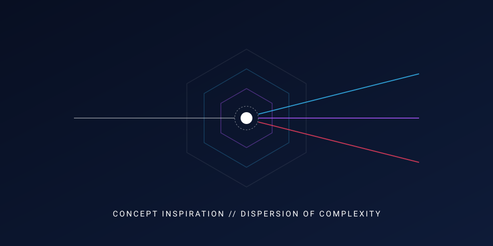

Concept 01: Cognitive Architecture
Introduction
An examination of spatial mental models that prioritize visual focus and relational clarity.
Inspiration
Inspired by neural network topologies and natural constellation dynamics, exploring unified relational networks.

Associating nodes through spatial intuition replaces artificial fragmentation with continuous structural harmony.
Technical Details & Approach
Contextual layers expand upon intentional interaction, maintaining an uncluttered cognitive workspace while preserving immediate access to core functions.